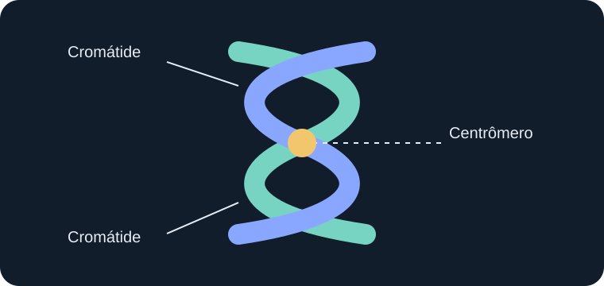

1. O que é o DNA?
O ácido desoxirribonucleico, conhecido pela sigla DNA, é uma molécula que armazena as informações genéticas dos organismos. Essas informações contêm instruções utilizadas pelas células para produzir moléculas e realizar suas atividades.
O DNA está presente nas células dos seres vivos. Nas células humanas, a maior parte encontra-se no núcleo celular, embora também exista DNA nas mitocôndrias.
Sua estrutura é formada por duas fitas organizadas em uma dupla hélice. Cada fita possui unidades chamadas nucleotídeos, constituídas por um açúcar, um grupo fosfato e uma base nitrogenada.
2. Estrutura e bases nitrogenadas
O DNA possui quatro bases nitrogenadas: adenina (A), timina (T), citosina (C) e guanina (G). A sequência dessas bases constitui parte essencial da informação genética.
As bases apresentam um pareamento específico: adenina liga-se à timina, enquanto citosina liga-se à guanina. Essa complementaridade permite que o DNA seja copiado durante a divisão celular.
- Adenina (A): pareia com a timina.
- Timina (T): pareia com a adenina.
- Citosina (C): pareia com a guanina.
- Guanina (G): pareia com a citosina.
3. O que são genes?
Os genes são segmentos de DNA que contêm informações necessárias para produzir moléculas funcionais, como proteínas e diferentes tipos de RNA. Eles participam da determinação de características e do funcionamento do organismo.
Cada gene ocupa uma posição específica em um cromossomo, chamada lócus gênico. Um mesmo gene pode apresentar diferentes versões, conhecidas como alelos.
É importante compreender que nem todas as características dependem de apenas um gene. Muitas são influenciadas pela ação conjunta de vários genes e também por fatores ambientais.

4. O que são cromossomos?
Os cromossomos são estruturas formadas por moléculas de DNA associadas a proteínas, principalmente histonas. Essa organização permite compactar o material genético e mantê-lo organizado dentro das células.
Durante determinadas etapas da divisão celular, os cromossomos ficam mais condensados e podem ser observados com maior facilidade por meio de microscópios.
Nas células humanas somáticas, existem normalmente 46 cromossomos, organizados em 23 pares. Um cromossomo de cada par é herdado da mãe e o outro do pai.
5. Relação entre DNA, genes e cromossomos
DNA, genes e cromossomos não são estruturas independentes. Os genes são regiões do DNA, enquanto os cromossomos são estruturas que organizam longas moléculas de DNA associadas a proteínas.
Podemos compreender essa relação da seguinte maneira:
- DNA: molécula que armazena a informação genética.
- Gene: segmento de DNA que contém uma informação funcional.
- Cromossomo: estrutura responsável por organizar o DNA.
Portanto, os genes fazem parte do DNA, e o DNA constitui a estrutura principal dos cromossomos.
6. DNA e hereditariedade
A hereditariedade é o processo pelo qual informações genéticas são transmitidas dos organismos parentais aos descendentes. Na reprodução sexuada, os gametas contribuem com parte do material genético que formará o novo indivíduo.
Essa transmissão explica por que os descendentes podem apresentar características semelhantes às de seus pais, mas não são geneticamente idênticos a eles.
Durante a formação dos gametas, ocorre a meiose, processo que reduz pela metade o número de cromossomos e contribui para a variabilidade genética.
7. A importância do estudo do DNA
O conhecimento sobre o DNA possui aplicações importantes na ciência e na sociedade. A análise do material genético permite investigar relações de parentesco, estudar a origem de determinadas doenças e compreender a diversidade entre os seres vivos.
Na agricultura e na pecuária, os conhecimentos genéticos também contribuem para pesquisas sobre características de plantas e animais. Na medicina, auxiliam na investigação de alterações genéticas e no desenvolvimento de estratégias de prevenção e tratamento.
Assim, o DNA representa uma das principais bases para a compreensão da vida, da diversidade biológica e da transmissão das características hereditárias.